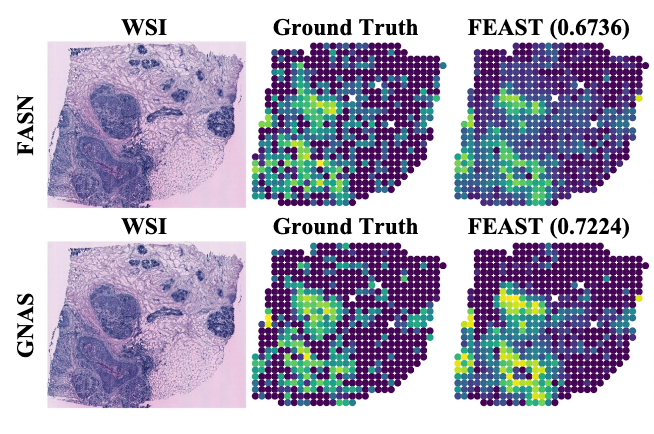
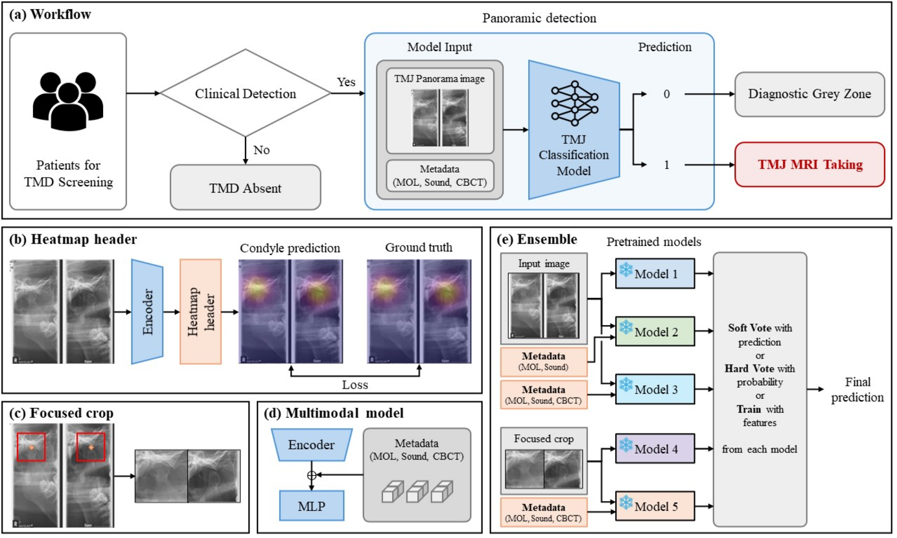
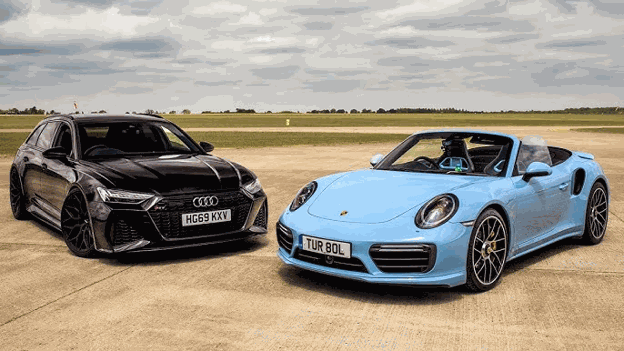
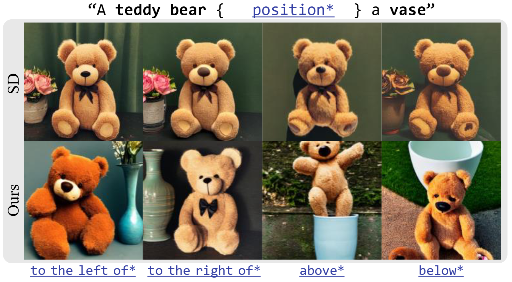
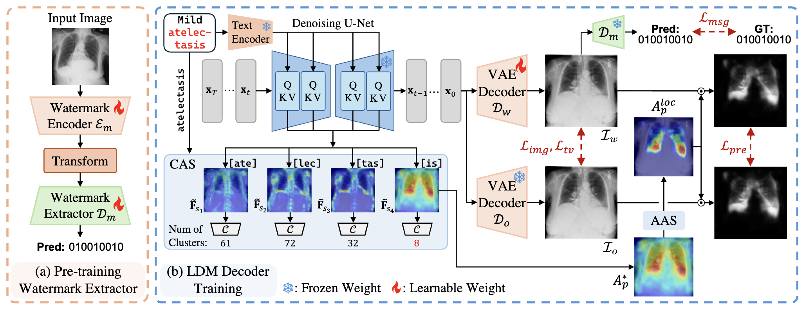

FEAST: Fully Connected Expressive Attention for Spatial Transcriptomics
CVPR 2026
I am an incoming PhD student at Emory University, advised by Prof. Youngjoong Kwon. My research focuses on Vision-Language Models, Interactive and Realistic Visual Computing, and Medical Image Analysis. Previously, I had the privilege of completing my M.S. under Prof. Seong Jae Hwang at the MICV Lab, Yonsei University. I interned at The Boeing Company as an AI Research Intern.




